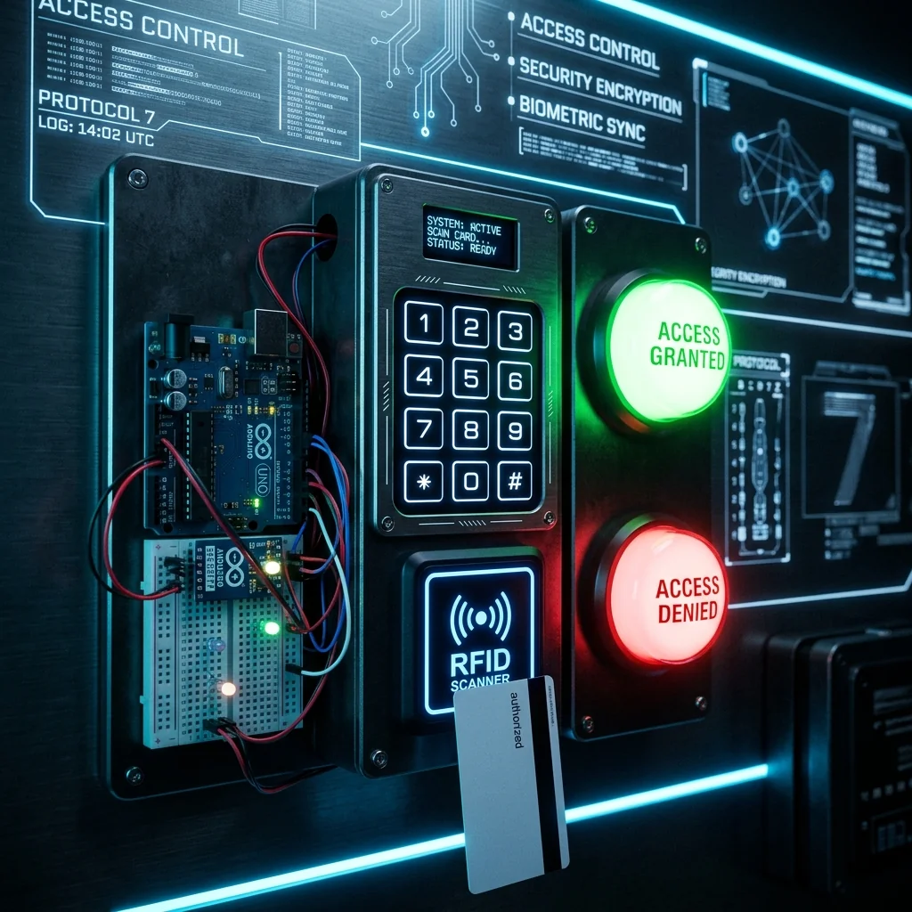

RFID Security Lock

Project Overview
The RFID Security Lock is a compact access control system built around the Arduino UNO and MFRC522 RFID reader. The system grants or denies entry based on registered RFID card UIDs, with an LCD display for real-time feedback and a servo motor actuating a physical door bolt.
Key Features & Implementation
- RFID Card Authentication: Reads 13.56 MHz MIFARE cards and compares UIDs against a whitelist stored in EEPROM, persisting across power cycles.
- Dual-Mode Entry: Supports contactless RFID and a 4-digit PIN fallback via a 4x4 matrix keypad.
- Access Log Display: A 16x2 LCD shows the last access event (Granted/Denied) and active user count in real time.
Challenges Solved
Storing multiple card UIDs in Arduino's limited EEPROM without corruption required a custom binary storage schema with checksum verification, ensuring whitelist integrity even after extended use.